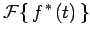

Inhalt Index DeskTop Bronstein

 Integraltransformationen Fourier-Transformation Eigenschaften der Fourier-Transformation Bildfunktionen spezieller Funktionen
Integraltransformationen Fourier-Transformation Eigenschaften der Fourier-Transformation Bildfunktionen spezieller Funktionen


Bildfunktion einer gedämpften Schwingung: Die in der folgenden linken Abbildung dargestellte gedämpfte Schwingung wird durch die Funktion
| (15.99a) |
beschrieben.
Zur Vereinfachung der Rechnung wird die FOURIER-Transformation der komplexen Funktion  ermittelt. Es gilt .
ermittelt. Es gilt .
Die FOURIER-Transformation liefert:
|  | = | ||
| = | (15.99b) |
die in der rechten Abbildung dargestellt ist.
Einer gedämpften Schwingung im Zeitbereich entspricht ein einziger Peak im Frequenzbereich.